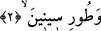
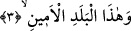

ve bu kül sürme taşı yerine geçer.
Bir hadis-i şerifte şöyle buyurulur: “Zeytinyağına yapışınız çünkü o safrayı açar,
balgamı giderir, sinirlere sağlamlık verir, bayılmayı engeller, ahlakı güzelleştirir,
nefsi hoş eder, gam ve kederi giderir.” [151]
İmam Fahreddin Razi şöyle der: Bir kimsenin rüyasında incir görmesi zengin ve
hayırlı bir adamla tâbir olunur. Rüyasında incir elde eden kimse çok büyük mal elde
eder, rüyasında incir yiyen kimseye Allah Teâlâ evlad ihsan eder. Her kim rüyasında
zeytin yaprağı aldığını görürse sağlam bir kulpa yapışır.
Hastanın biri İbn Sirin’e gelerek rüyasında kendisine: İki “lâ” ye şifa bulursun,
dendiğini söyleyerek yorumlamasını ister. İbn Sirin: Öyleyse zeytin yiyeceksin. Çünkü
zeytin Kur’an’ın deyimiyle; “la şarkıyye ve la ğarbiyye” Doğu’ya da batı’ya da nisbet
edilemeyen mübarek bir ağaçtır.” (Nur, 24/35)
Taberi’ye göre okuduğumuz âyette yer alan “tin”den maksad Dimaşk’ın üzerinde
bulunduğu dağdır ki adı Salihıyye dağıdır. Bu dağa “cebel-i Kasyon” denilir.
“Zeytun”dan maksad ise Zita dağıdır. Bu dağ Beyt-i Makdis’in doğu tarafında bulunur.
Bu kelimeleri bu şekilde tefsir etmemiz Dimaşk’ta incirin çok yetişmesinden, İlya’da ise
zeytinin çok bulunmasından dolayıdır.
2. Sina dağına
Âyette yer alan “tur-i sinine”den maksad Hz. Mûsâ (a.s.)’ın Rabbi ile üzerinde
konuşmuş olduğu dağdır. Mâverdî’nin ifâdesine göre Arapçada her dağa “tur” denmez.
Sadece üzerinde ağaç ve meyve bulunan dağlara tur denilir. Eğer bir dağın üzerinde
ağaç yoksa buna “cebel” denilir.
“Sîniyn ve sîna” kelimeleri Tur dağının üzerinde bulunan iki yerin özel adıdır. Bundan
dolayı “Tur” kelimesi bu iki özel isme izâfe olunmuştur. “Sîniyn” Süryânice’de,
“ağaçlı”, Habeş dilinde ise “güzel ve mübarek” demektir.
Keşfu’l-esrar’da ifâde olunduğuna göre “sîniyn” kelimesinin aslı, “Sînâ veya Seynâ”
şeklindedir. Burada “sîniyn” şeklinde okunmasının sebebi âyet sonlarındaki ses
uyumuna riâyet etmek içindir, tıpkı es-Saffat sûresinde yer alan “selamun ala ilyâsîyn/
İlyas’a selam” (Saffat, 37/130) âyet-i kerimesinde olduğu gibi. O âyette de İlyâs
denecek iken âyet sonlarındaki ses uyumunun sağlanması için “ilyâsîyn” denmiştir.